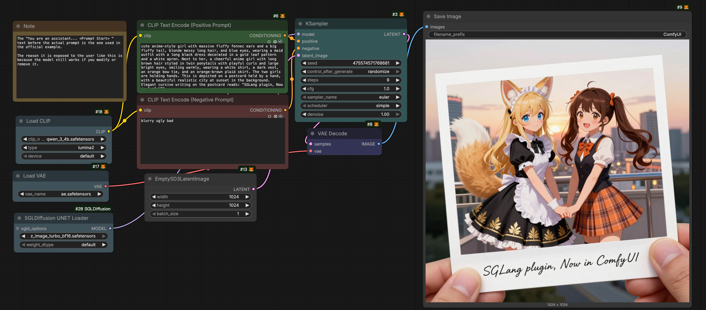
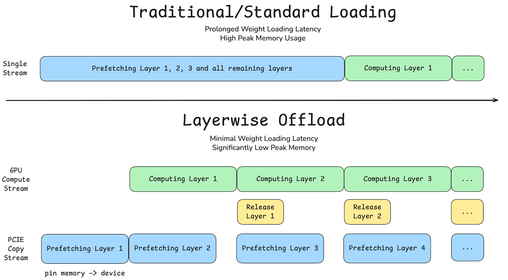

SGLang‑Diffusion: Two Months In
On this page
Since its release in early Nov. 2025, SGLang-Diffusion has gained significant attention and widespread adoption within the community. We are deeply grateful for the extensive feedback and growing number of contributions from open-source developers.
Over the past two months, we’ve been meticulously optimizing
SGLang-Diffusion, now (docker image tag:
lmsysorg/sglang:dev-pr-17247) up to 2.5x faster than our
initial release.
Here is a summary of our progress:
Overview
New Models:
- Day-0 support for Flux.2, Qwen-Image-Edit-2511, Qwen-Image-2512, Z-Image-Turbo, Qwen-Image-Layered, TurboWan, GLM-Image and more.
- Run SGLang-Diffusion with diffusers backend: compatible with all models in diffusers; more improvements are planned (see Issue #16642).
LoRA Support:
- We support almost all LoRA formats for supported models. This
section lists some example LoRAs that have been explicitly tested and
verified.
Base Model Supported LoRAs Wan2.2 lightx2v/Wan2.2-Distill-Loras
Cseti/wan2.2-14B-Arcane_Jinx-lora-v1Wan2.1 lightx2v/Wan2.1-Distill-LorasZ-Image-Turbo tarn59/pixel_art_style_lora_z_image_turbo
wcde/Z-Image-Turbo-DeJPEG-LoraQwen-Image lightx2v/Qwen-Image-Lightning
flymy-ai/qwen-image-realism-lora
prithivMLmods/Qwen-Image-HeadshotX
starsfriday/Qwen-Image-EVA-LoRAQwen-Image-Edit ostris/qwen_image_edit_inpainting
lightx2v/Qwen-Image-Edit-2511-LightningFlux dvyio/flux-lora-simple-illustration
XLabs-AI/flux-furry-lora
XLabs-AI/flux-RealismLora - Fully functional HTTP API:
Feature API Endpoint Key Parameters Set or Activate (multiple) LoRA(s) /v1/set_loralora_nickname,lora_path,strength,targetMerge Weights /v1/merge_lora_weightsstrength,targetUnmerge Weights /v1/unmerge_lora_weights- List Adapters /v1/list_loras-
Parallelism: Support SP and TP for most models, alongside hybrid parallelism (combinations of Ulysses Parallel, Ring Parallel, and Tensor Parallel).
Attention Backend: SageAttention2, SageAttention3 and SLA, more backends are planned.
Hardware Support: AMD, 4090, 5090, MUSA
SGLang-Diffusion x ComfyUI Integration: We have implemented a flexible ComfyUI custom node that integrates SGLang-Diffusion’s high-performance inference engine. See usage guide.
While ComfyUI offers exceptional flexibility via custom nodes, it often lacks multi-GPU support and optimal performance.
Our solution replaces ComfyUI’s denoising model forward pass with SGLang’s optimized implementation, preserving ComfyUI’s flexibility while leveraging SGLang’s superior inference. Users can simply swap ComfyUI’s loader with our SGL-Diffusion UNET Loader to enable enhanced performance without modifying existing workflows.

SGLang-Diffusion Plugin in ComfyUI
Performance Benchmark
Here are some performance benchmark results:
- We benchmarked SGLang-Diffusion (docker image tag:
lmsysorg/sglang:dev-pr-17247) across popular models, comparing it against previous version (Nov. 2025) and other frameworks. SGLang-Diffusion achieves state-of-the-art speeds on NVIDIA GPUs, outperforming all other solutions by up to 5x.
- We compared the performance of SGLang-Diffusion under different environments with one of the fastest vendors.
- We also evaluated SGLang-Diffusion on AMD GPU:
Key Improvements
To serve as a robust, industrial-grade framework, speed, stability, and code quality are our top priorities. We have refactored key components to eliminate bottlenecks and maximize hardware efficiency.
Here are the highlights of our recent technical improvements:
1. Layerwise Offload
From our early profiling, we identified model loading/offloading as a major bottleneck, since the compute stream has to wait until all the weights are on-device, and most GPUs are not equipped with sufficient VRAM to keep all components in memory throughout inference.
To tackle this, we introduced:
LayerwiseOffloadManager: A manager class that provides hooks for prefetching weights of the next layer while computing on the current layer, as well as releasing hooks after compute.OffloadableDiTMixin: A mixin class that registersLayerwiseOffloadManager’s prefetch and release hooks for the diffusion-transformer.
which has the following benefits:
- Compute-Loading Overlap: Overlapping computation with weight loading eliminates stalls on the copy stream, significantly boosting inference speed — especially for multi-DiT architectures like Wan2.2
- VRAM Optimization: A reduced peak VRAM footprint enables the generation of longer video sequences and higher-resolution content

Comparison of Standard Loading with Layerwise Offload
Layerwise Offload is now enabled for video models by default.
See related PRs (#15511, #16150).
2. Kernel Improvements
- Upstream FlashAttention: We synchronized our kernels with the latest upstream version from Dao-AILab to eliminate performance lags. See #16382.
- Optimized QKV Processing: We analyzed the
performance trade-offs between Packed QKV and downstream kernels (e.g.,
qk_norm, FlashInfer RoPE). To achieve optimal preprocessing performance, we implemented QKV unpacking without introducing extra contiguous memory operations. - JIT QK Norm Kernel: Fused Q/K RMSNorm into a single inplace kernel to cut launch count and memory traffic before attention.
- FlashInfer RoPE: Apply RoPE on Q/K inplace with FlashInfer when available (fallback otherwise), reducing RoPE overhead and intermediate tensor materialization.
- Weight Fusion (Operator Fusion): Fused projection + activation patterns (e.g., gate/up merge + SiLU&Mul) to reduce GEMM count and elementwise launches in DiT blocks.
- Timestep Implementation: Use a dedicated CUDA kernel for timestep sinusoidal embedding (sin/cos) to reduce per-step overhead in diffusion scheduling. See #12995.
3. Cache-DiT Integration
We’ve integrated Cache-DiT🤗, the most
popular framework for DiT cache, seamlessly into SGLang-Diffusion, fully
compatible with torch.compile, Ulysses Parallel, Ring
Parallel, and Tensor Parallel, along with any hybrid combination of
these three. See #14234, #15163 and
#16532
for implementation details.
By setting just a few environment variables, generation speed can increase by up to 169%.
Here is an example to enable Cache-DiT in SGLang-Diffusion:
SGLANG_CACHE_DIT_ENABLED=true \
SGLANG_CACHE_DIT_SCM_PRESET=fast \
sglang generate --model-path=Qwen/Qwen-Image --prompt="Cinematic establishing shot of a city at dusk"
--save-outputFurthermore, we can now integrate and refine Cache-DiT optimizations to our newly-supported diffuser backend (see Issue #16642).
4. Few More Things
- Memory Monitoring: Peak usage statistics available across offline generation and online serving workflows.
- Profiling Suite: Full-stage support with step-by-step docs for PyTorch Profiler and Nsight Systems.
- Diffusion Cookbook: Curated recipes, best practices, and benchmarking guides for SGLang-Diffusion.
Roadmap (26Q1)
- Sparse Attention Backends
- Quantization (nunchaku, nvfp4 and others)
- Optimizations on consumer-level GPUs
- Codesign with sglang-omni
Please refer to Roadmap for 26Q1 for more details.
Acknowledgment
SGLang-Diffusion Team:
Aichen Feng, Adarsh Shirawalmath, Alison Shao, Changyi Yang, Chunan Zeng, DefTruth, Fan Lin, Fan Luo, Fenglin Yu, Gaoji Liu, Heyang Huang, Hongli Mi, Huanhuan Chen, Ji Huang, Jiajun Li, Ji Li, Jinliang Li, Junlin Lv, Jianying Zhu, Jiaqi Zhu, Mingfa Feng, Ran Mei, Ruiguo Yang, Shenggui Li, Shuyi Fan, Shuxi Guo, Song Lin, Wang Xingyu, Weitao Dai, Wenhao Zhang, Xi Chen, Xiao Jin, Xiaoyu Zhang (BBuf), Yihan Chen, Yikai Zhu, Yin Fan, Yuhao Yang, Yixuan Zhang, Yuan Luo, Yueming Yuan, Yuhang Qi, Yuzhen Zhou, Zhiyi Liu, Zhuorui Liu, Ziyi Xu, Mick
Special thanks to NVIDIA and Voltage Park for their compute support.
Special thanks to AMD for their compute support and assistance in development.
Learn more
- Slack channel: #diffusion (join via slack.sglang.io)
- Cookbook for SGLang-Diffusion
- Documentation on SGLang-Diffusion
- Roadmap for 26Q1